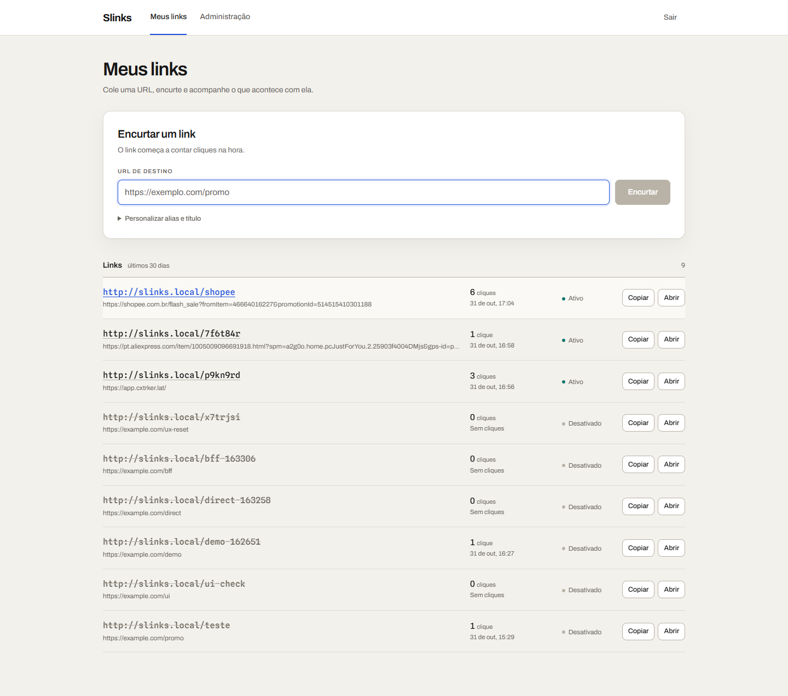
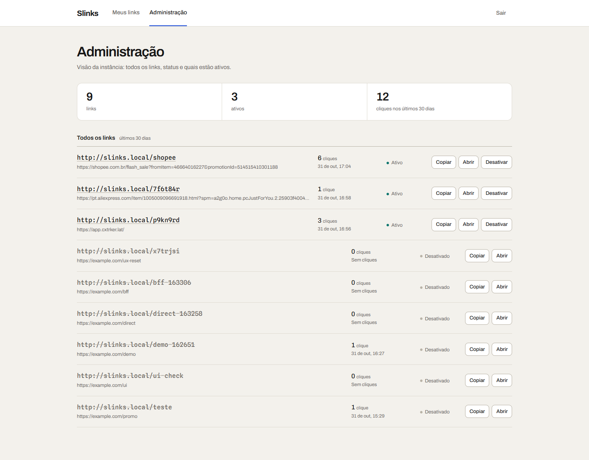

Slinks em destaque
Encurtador de links com analytics que declara o quanto é estimativa.
O redirect nunca depende do analytics. Se a gravação do clique falhar, o visitante recebe o 302 de qualquer jeito — a perda é registrada, não vira erro para quem clicou.


- testes
- 209
- API · BFF · SPA
- 133 · 46 · 30
- ci
- diff de contrato
- banco
- Testcontainers
- redirect
- 302 · no-store